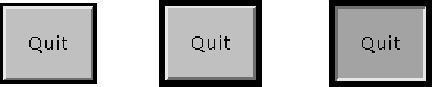

java.lang.Object
|
+----java.awt.Component
|
+----java.awt.Button
public class Button
extends Component
This class creates a labeled button. The application can cause some action to happen when the button is pushed. This image depicts three views of a "Quit" button as it appears under the Solaris operating system:

The first view shows the button as it appears normally. The second view shows the button when it has input focus. Its outline is darkened to let the user know that it is an active object. The third view shows the button when the user clicks the mouse over the button, and thus requests that an action be performed.
The gesture of clicking on a button with the mouse is associated with one instance of ActionEvent, which is sent out when the mouse is both pressed and released over the button. If an application is interested in knowing when the button has been pressed but not released, as a separate gesture, it can specialize processMouseEvent, or it can register itself as a listener for mouse events by calling addMouseListener. Both of these methods are defined by Component, the abstract superclass of all components.
When a button is pressed and released, AWT sends an instance of ActionEvent to the button, by calling processEvent on the button. The button's processEvent method receives all events for the button; it passes an action event along by calling its own processActionEvent method. The latter method passes the action event on to any action listeners that have registered an interest in action events generated by this button.
If an application wants to perform some action based on a button being pressed and released, it should implement ActionListener and register the new listener to receive events from this button, by calling the button's addActionListener method. The application can make use of the button's action command as a messaging protocol.